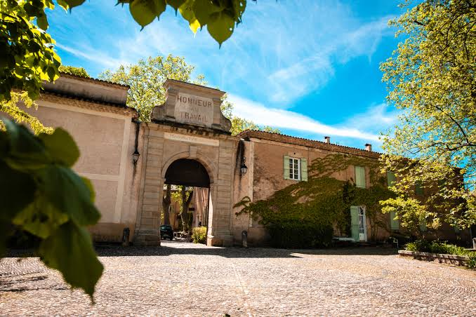

Manufacture
Royale
de VilleneuvetteAncienne cité drapière royale


⟹ Tissage artisanal du Haut-Languedoc ⟸
Blottie dans un vallon boisé à quelques kilomètres de Clermont-l'Hérault, Villeneuvette est un authentique village-usine né de la volonté d'un marchand-drapier clermontais, Pierre Baille, qui fonde une première fabrique de draps sur ce site arrosé par la Dourbie vers 1673. Le lieu, déjà pourvu d'un moulin à foulon, se prête idéalement au tissage et à la teinturerie de la laine.

Le 27 juillet 1677, un édit de Louis XIV érige l'atelier en manufacture royale de draps : le roi et son ministre Colbert espèrent ainsi concurrencer les productions anglaises et hollandaises. Sous le nom de Villeneuve-lès-Clermont, la manufacture tisse les fameux « londrins seconds », draps légers destinés à l'exportation vers les échelles du Levant, Constantinople, Smyrne ou Alexandrie.
Au XIXe siècle, la famille Maistre reprend l'entreprise et réoriente sa production vers les draps militaires, mécanisant l'usine — la cheminée de 1883 en témoigne encore. La manufacture emploie jusqu'à 800 ouvriers au début du siècle et tourne à plein régime durant la Première Guerre mondiale, avant de fermer définitivement ses portes en 1954, au terme de près de trois siècles d'activité ininterrompue.
Nous avons approuvé l'établissement qui a été fait sous notre bon plaisir d'une Manufacture de draps à Villeneuve-lez-Clermont, diocèse de Lodève en notre province de Languedoc.
— Édit de Louis XIV, 20 juillet 1677Fermé le soir durant son activité industrielle, le village comptait alors ses propres logements ouvriers, sa chapelle, son école et sa caisse d'épargne, fondée dès 1818. Les relations entre patronat et ouvriers y furent, tout au long de son histoire, réputées non conflictuelles — une singularité dans l'industrie textile héraultaise.
De ruelles en places, de parcs en jardins, chaque recoin de Villeneuvette invite à la flânerie, entre platanes centenaires et vestiges du passé industriel.
— Office de Tourisme Destination SalagouDepuis la fermeture de la manufacture en 1954, le village s'est peu à peu repeuplé : une soixantaine à une centaine d'habitants y vivent aujourd'hui, parmi lesquels de nombreux artistes et artisans d'art — céramistes, luthiers, créateurs de bijoux — qui ont investi les anciens ateliers et logements ouvriers réhabilités.
Clermont-l'Hérault à 3 km, cette bastide médiévale abrite une collégiale gothique et un centre historique animé.
Lac du Salagou à quelques minutes de route, ses terres rouges de ruffe et son plan d'eau turquoise offrent un contraste saisissant, propice à la baignade et à la randonnée.
Cirque de Mourèze ce chaos rocheux dolomitique voisin se parcourt à pied au fil de sentiers balisés parmi des formations calcaires spectaculaires.
Lodève à une vingtaine de minutes, l'ancienne cité drapière rivale de Villeneuvette conserve elle aussi une cathédrale et un riche patrimoine textile.